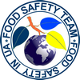

Примітка від Food Safety Team: повернутись на головну сторінку ви зможете, натиснувши на іконку праворуч :)
Самоконтроль готовності до сертифікаційного аудиту
Стандарт IFS food містить близько 270 вимог, з яких більше половини потребують наявності документованої інформації у вигляді процедур, протоколів, записів, реєстрів, наказів і таке інше. Оцінки ризиків, що мають бути проведені, в багатьох випадках теж треба документувати для підтвердження того, що ви ці оцінки проводили. Відповідальним особам дуже просто заплутатись у тому великому об'ємі інформації. Але існують інструменти, які допомагають у контролі наявності таких документів та контролі їх актуальності.
Радять фахівці
командиFood Safety Team
У процесі підготовки до сертифікаційного або наглядового аудиту задіяні в цьому відповідальні особи повинні бути впевненими, що аудитор на всі свої питання отримає швидкі та компетентні відповіді. Для цього ми пропонуємо використовувати спеціальний інструмент, який називається СВ11. Consolidate of data Bases №11 (СВ11) є інтерактивним інструментом для накопичення інформації про наявність документації відповідно до вимог стандарту IFS food та про її статус актуальності. Цей інструмент демонструє відсоток наявності необхідної для проходження аудиту документації.
Які конкретно переваги та можливості ВАШЕ підприємство отримає, придбавши у нас інструмент "Consolidate of data Bases №11":

CONTACTS
Phone: +380954552516
E mail: office@ifs.pp.ua
SITE MAP
- Main page - ГОЛОВНА СТОРІНКА
- Consult - КОНСУЛЬТАЦІЇ З ВПРОВАДЖЕННЯ СИСТЕМИ IFS FOOD
- Audit - ПІДГОТОВКА ДО СЕРТИФІКАЦІЙНОГО АУДИТУ
- Search - ПОШУК АУДИТОРІВ ТА СЕРТИФІКАЦІЙНИХ КОМПАНІЙ
- Ready - САМОКОНТРОЛЬ ГОТОВНОСТІ ДО СЕРТИФІКАЦІЙНОГО АУДИТУ
- Third party - АУДИТ ПОСТАЧАЛЬНИКА ТРЕТЬОЮ СТОРОНОЮ
- Implementation - ІНФОРМАЦІЯ СТОСОВНО ВПРОВАДЖЕННЯ СИСТЕМИ
- Support - ДОКУМЕНТАЦІЯ СТОСОВНО ПІДТРИМАННЯ СИСТЕМИ
- DSM-RSM - ІНСТРУМЕНТИ МЕНЕДЖЕРА СИСТЕМИ ЯКОСТІ ТА БХП
- Publications- ПУБЛІКАЦІЇ ТА ДИСКУСІЇ
- About us - ПРО НАС
WE CAN
- Зробимо вашу систему якості та безпечності харчової продукції більш ефективною
- Зменшимо витрати на сертифікацію
- Побудуємо "з нуля" систему якості та безпечності для будь-якого підприємства